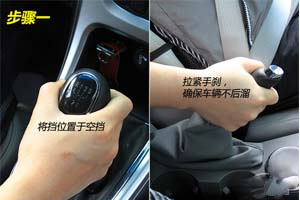
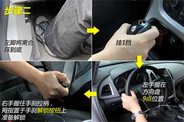
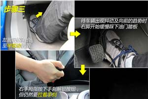
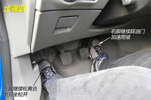

上坡起步
一、操作要求
机动车驾驶人应通过视觉和感觉及时判断坡道的坡度大小、长短及路宽等道路情况，采取正确的操作方法，控制车辆平稳停车和起步。做到转向正确，换挡迅速，操纵加速踏板、驻车制动器和离合器踏板的动作准确协调。要求在≥10%坡度，≥30米坡长的坡道上的固定位置停车，考察方向、制动、离合器三者的协调配合。
二、评判标准
 车辆保险杆未定于杆线上，前后超过1250px(以桩杆线的前后边缘起算)，不合格；
车辆保险杆未定于杆线上，前后超过1250px(以桩杆线的前后边缘起算)，不合格；
 起步时后溜大于750px的，不合格；
起步时后溜大于750px的，不合格；
 车头未在停车范围内(车辆保险杠未定于桩杆线上，前后不超过50厘米的(以桩杆线的前后边缘起算))扣20分；
车头未在停车范围内(车辆保险杠未定于桩杆线上，前后不超过50厘米的(以桩杆线的前后边缘起算))扣20分；
 车身未靠边停止在路边右边线750px以内的，扣20分；
车身未靠边停止在路边右边线750px以内的，扣20分；
 后溜<750px，扣20分。
后溜<750px，扣20分。
三、操作提醒
 如果坡起时车辆出现后溜的状况，不要急，立即踏下离合踩下刹车，并拉紧手刹，然后再按程序起步。如果来不及踩离合或上坡加油不够导致发动机熄火，不过就是重新发动车辆而已，不要胆怯，大不了从头再来。
如果坡起时车辆出现后溜的状况，不要急，立即踏下离合踩下刹车，并拉紧手刹，然后再按程序起步。如果来不及踩离合或上坡加油不够导致发动机熄火，不过就是重新发动车辆而已，不要胆怯，大不了从头再来。
 如果坡道不陡，并且后面没车，起步稍微后退也没有危险的情况下，可以不拉手刹起步，但是起步动作需要更加迅速。
如果坡道不陡，并且后面没车，起步稍微后退也没有危险的情况下，可以不拉手刹起步，但是起步动作需要更加迅速。
四、操作步骤




五、考试技巧
 听到“上坡定点停车”指令后，立即开启右转向灯，方向向场地右侧靠。起步时如果有坡度，为防止溜坡，要用半坡起步法起步。
听到“上坡定点停车”指令后，立即开启右转向灯，方向向场地右侧靠。起步时如果有坡度，为防止溜坡，要用半坡起步法起步。
 即将到达路边时，方向向左回小半圈，再迅速向右回正，使车右侧与路边保持平行，并距离在30厘米内(最好压白色虚线走，或用左筋对准标准线走)。起步后，可完全放开离合器踏板进行上坡。上坡过程中，如果车辆出现明显抖动，可稍殊离合器踏板，以防熄火。
即将到达路边时，方向向左回小半圈，再迅速向右回正，使车右侧与路边保持平行，并距离在30厘米内(最好压白色虚线走，或用左筋对准标准线走)。起步后，可完全放开离合器踏板进行上坡。上坡过程中，如果车辆出现明显抖动，可稍殊离合器踏板，以防熄火。
 快要到达停车点时，珠离合器踏板，放漫车速，当向右看到停车标记时，珠制动踏板，珠离合器踏板停车，或者从左后视镜下沿看到定位停车线边缘即停车，拉紧驻车制动器手柄，关转向灯，变速杆置于空档位置，抬离合器踏板。注意，一定要抬离合器踏板后再起步。
快要到达停车点时，珠离合器踏板，放漫车速，当向右看到停车标记时，珠制动踏板，珠离合器踏板停车，或者从左后视镜下沿看到定位停车线边缘即停车，拉紧驻车制动器手柄，关转向灯，变速杆置于空档位置，抬离合器踏板。注意，一定要抬离合器踏板后再起步。
 停10秒，等报完成绩，进行半坡起步准备，珠离合器踏板，珠制动踏板，挂1档，打左转向灯并按一下喇叭，松驻车制动器手柄。
停10秒，等报完成绩，进行半坡起步准备，珠离合器踏板，珠制动踏板，挂1档，打左转向灯并按一下喇叭，松驻车制动器手柄。
 轻抬离合器踏板，当车身有抖动感觉或发出齿轮磨合声音时，完全松开制动踏板，轻珠加速踏板，车即向前行驶.如果当车抖动时放开制动踏板，车不走，怠速快速下降，要及时珠下离合器踏板和制动踏板，保持不熄火、不溜坡，然后重新起步。注意：起步时间不要超过30秒。
轻抬离合器踏板，当车身有抖动感觉或发出齿轮磨合声音时，完全松开制动踏板，轻珠加速踏板，车即向前行驶.如果当车抖动时放开制动踏板，车不走，怠速快速下降，要及时珠下离合器踏板和制动踏板，保持不熄火、不溜坡，然后重新起步。注意：起步时间不要超过30秒。
 下坡时，可用半联动控制车速，也可完全放开离合器踏板，用制动踏板控制车速。
下坡时，可用半联动控制车速，也可完全放开离合器踏板，用制动踏板控制车速。